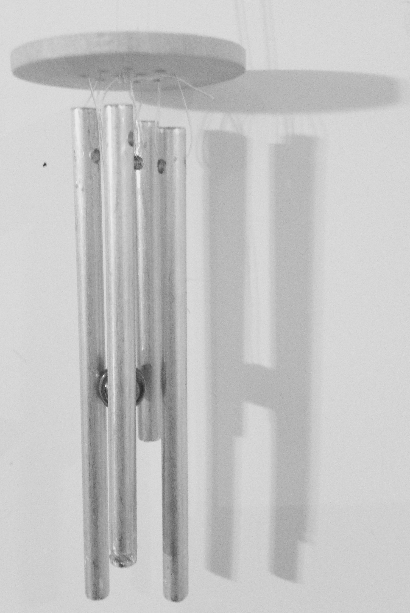
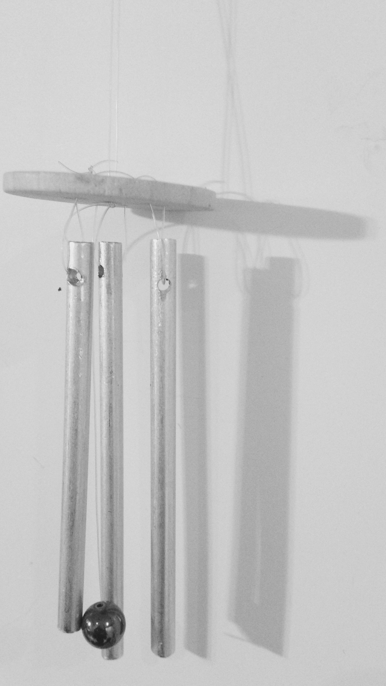
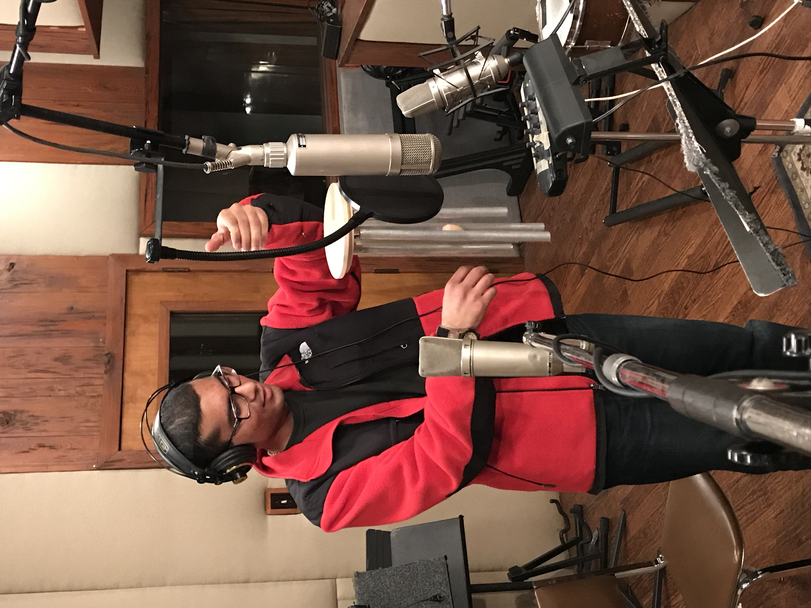

A 21-piece inharmonic chime tree, spanning an interval of a 12th.
Tuned
to the primal sound
of Life
the veils disappear
-Annema Raven
I handcraft wind chimes and chime trees of solid-bar and tubular varieties. I precisely tune every chime, making them ideal for acoustical research, musical performance, and ambient listening. All proceeds benefit the North Texas Food Bank.
Solid-Bar Chimes
2000–7000 Hz
My three standard tunings are (left to right) C pentatonic, E lydian, and A pentatonic.


These chimes are $12 each. I charge $4/individual chime for custom-tuned solid-bar wind chimes.

Solid-Bar Chimes Trees
1000–5000 Hz
Unlike the solid-bar wind chimes, my solid-bar chime trees are inharmonically tuned and are constructed in linear rather than circular arrays.
Since my chime trees are often purchased with the intention of being played in bands and orchestras, I use solid bars of larger diameters (usually 3/8″), which produce a louder sound than my solid-bar wind chimes (for which I use bars with 1/4″ diameter).
My 21-piece solid-bar chime tree is featured on blues/world musician Stephen Houpt's album-in-progress.
I charge $5/individual chime.

Mike Camerata recording one of my chime trees at Audio Dallas
Tubular Wind Chimes
50–800 Hz
Tubular wind chimes produce a mellower, deeper, and louder sound than solid-bar chimes. Ambient listeners also find the particular tuning of tubular wind chimes most easily discernible.
My standard tuning for tubular wind chimes is C pentatonic. I am currently developing a minor tuning and will have sound samples available soon.
The tubular chimes cost $20/individual chime.
Recording my C pentatonic tubular chimes for Stephen Houpt at Audio Dallas